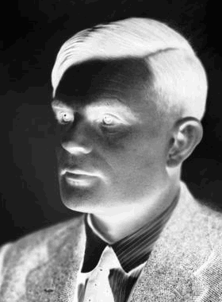
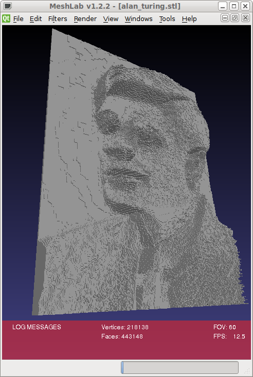
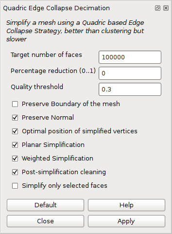
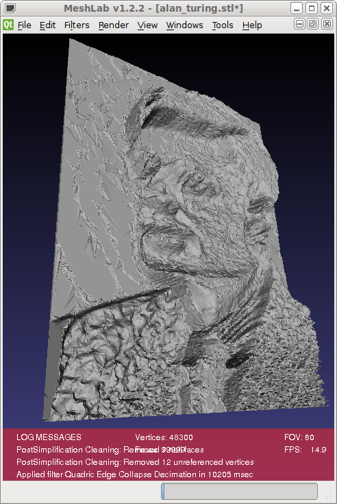
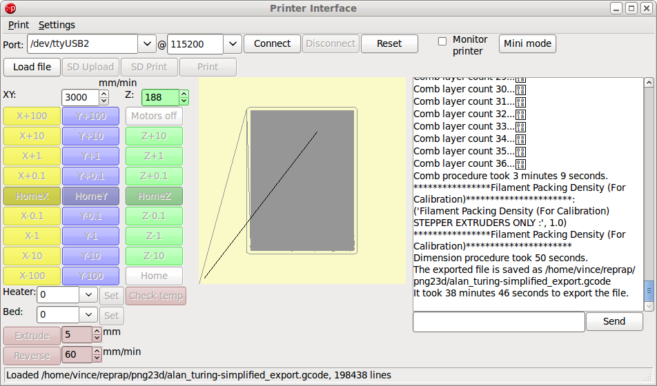
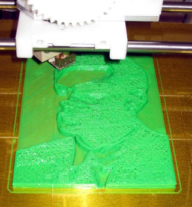
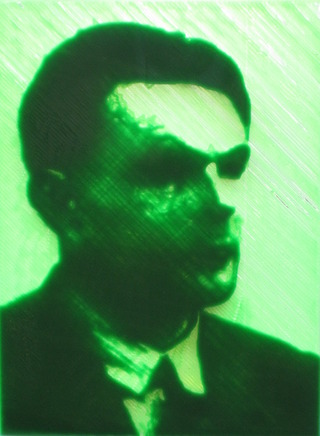

by kyllikki
by kyllikki
Lithophane of Alan Turing
This example shows how to produce a Lithophane of Alan Turing and shows a physical print of the result.
This example was inspired by Rupert Rawnsley Alan Turing Lithophane.
I decided the output would be 100mm wide and 32 layers deep (12.8mm with 0.4mm layers) as that seemed to keep the mesh complexity to reasonable values. I therefore needed an image approximately 200-300pixels wide and of suitable contrast.
An image of Turing was obtained from the National Portrait Gallery. The 370x500 pixel sample image was cropped and scaled to a 280x380 head shot.
The image colours were then altered using the Gimp. The image was changed to grayscale then level tool to increase the contrast and use the whole available colour range. Then the image was converted to a 32 entry linear indexed palette with no dithering and back to a greyscale image. Finally the image was inverted, this is necessary because in a lithophane the lightest areas require the thinnest material.
The tool was run on this image with the settings for 32 levels, width of 100 and depth of 12.8 as already determined
$ png23d -v -t x -l 32 -w 100 -d 12.8 -o stl alan_turing-inv.png alan_turing.stl Reading from png file "alan_turing-inv.png" Writing output to "alan_turing.stl" Generating binary STL Generating mesh from bitmap of size 280x380 with 32 levels Commencing mesh simplification on 788684 facets Indexing 2366052 verticies Bloom filter prevented 390333 (16%) lookups Bloom filter had 573 (0%) false positives Indexing required 1975719 lookups with mean search cost 2917 comparisons Number of unique verticies in result index 390906 Number of facets in result 443148 Writing Binary STL output Completed in 22s
The result was loaded into meshlab to inspect the generated mesh.
Although usable in this form the mesh still has over 400,000 faces and would take an excessive time to run through skeinforge (I terminated it after 2 hours waiting).
To reduce the complexity the meshlab quadratic decimation filter was applied to reduce the face count to 100,000.
The simplified mesh was still acceptable quality.
The STL file was loaded into the Printrun project tool Pronterface which automatically ran skeinforge on the file to layer slice the input.
My printer settings have a 0.4mm layer height which produced should have generated 32 layers for the 12.8mm of output, in fact 36 layers were generated. The slicing procedure took 38minutes 46seconds to complete.
The print itself took a few hours to complete, using around 8 metres of 3mm filament, resulting in a reasonable lithophane.
{kind=link}
I did not have any white filament, nor enough of a single colour so the result is in green and yellow.

I discovered that the best viewing results for this type of design are to be found by back-lighting from the printed side. The flat bottom layer provides an excellent viewing surface.
{kind=link}
In conclusion the png23d tool worked as required and generated a usable result. If I were to repeat the print I would observe that more than 10mm of depth is not useful with coloured PLA material so 25 layers (at 0.4mm) would suffice. Additionally knowing that the result is best viewed from the flat side of the print I would flip the image in the horizontal direction to maintain the original image composition.